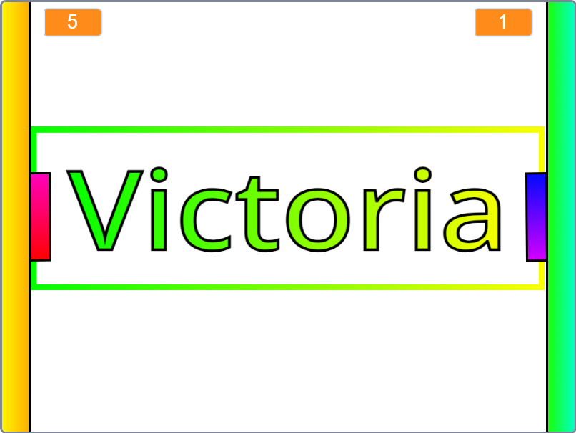
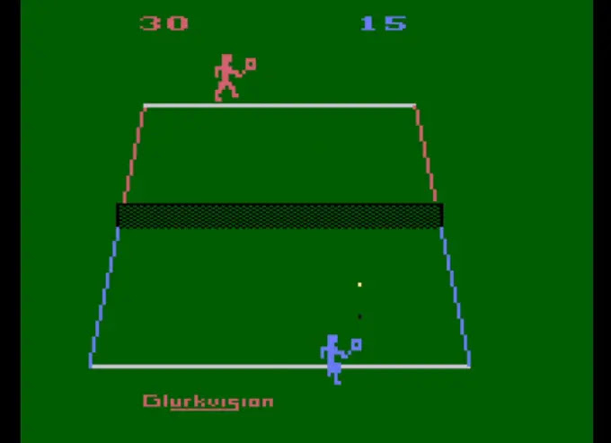
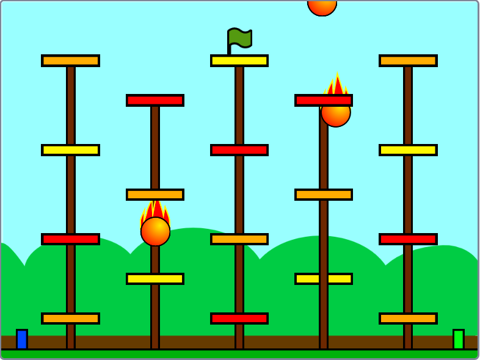
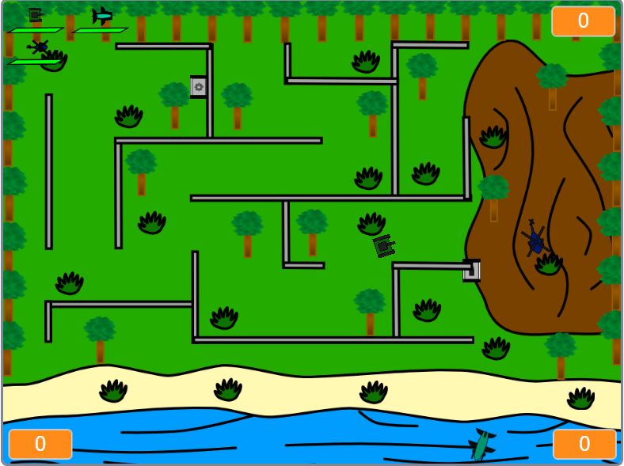
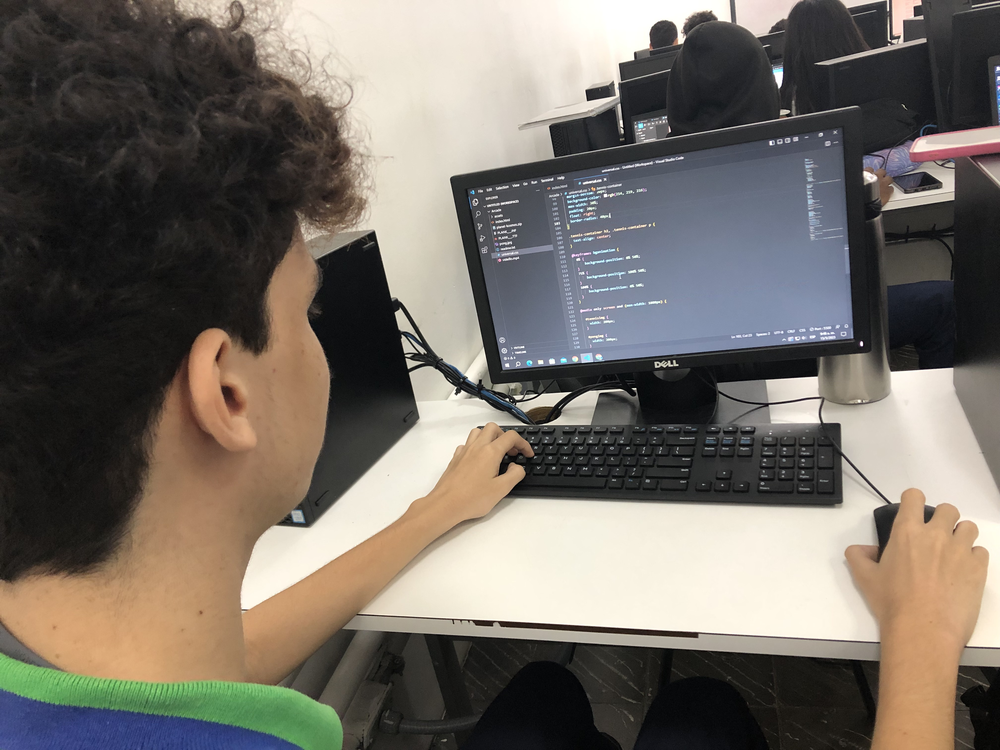
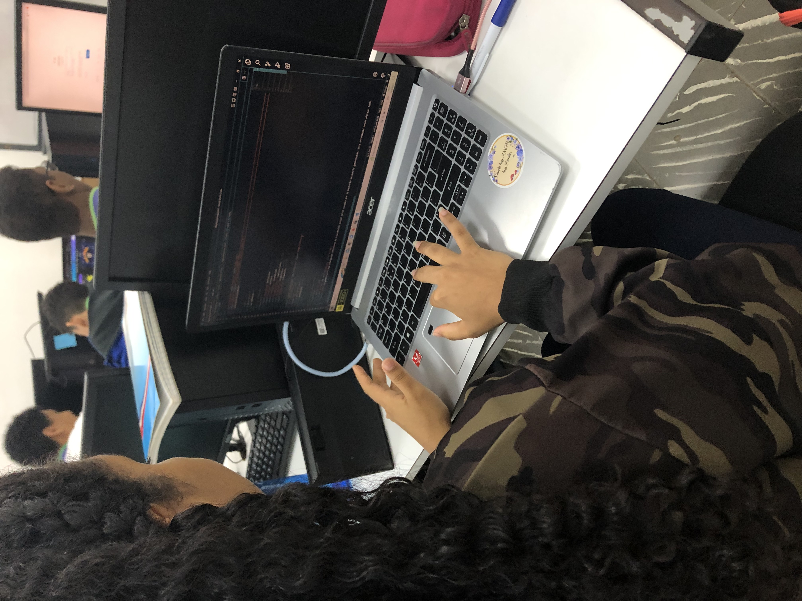
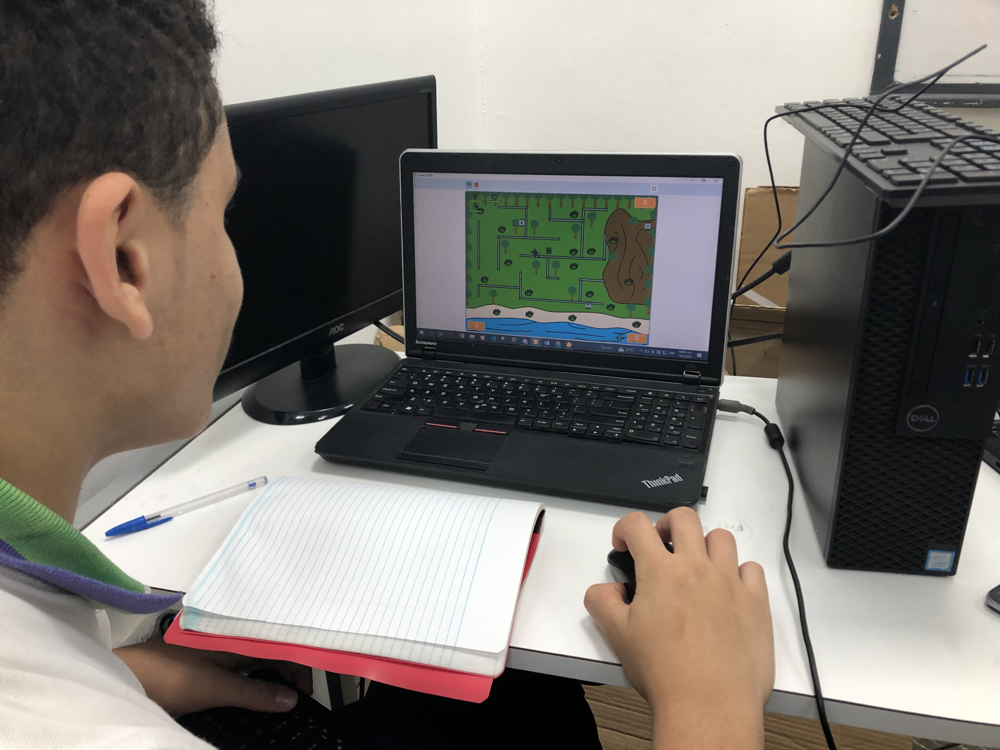
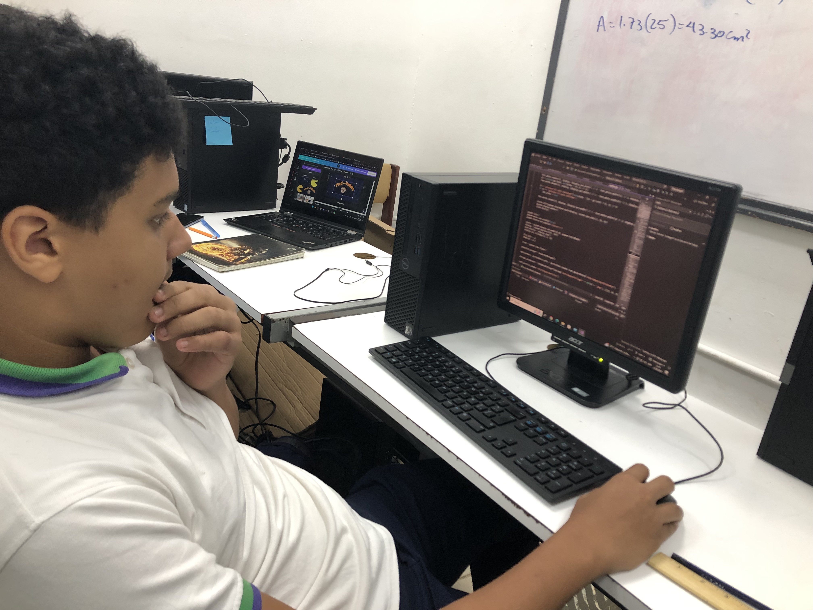
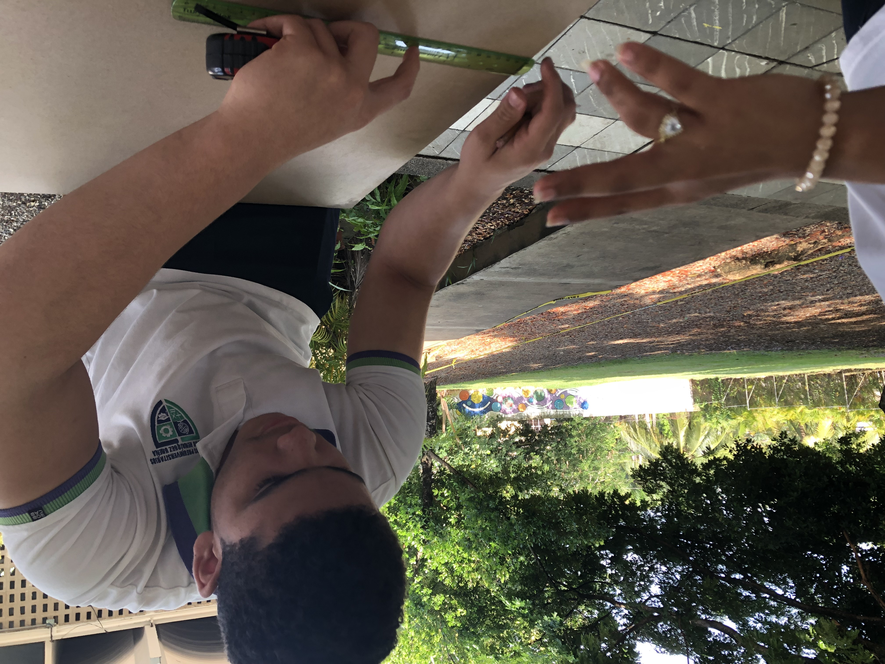
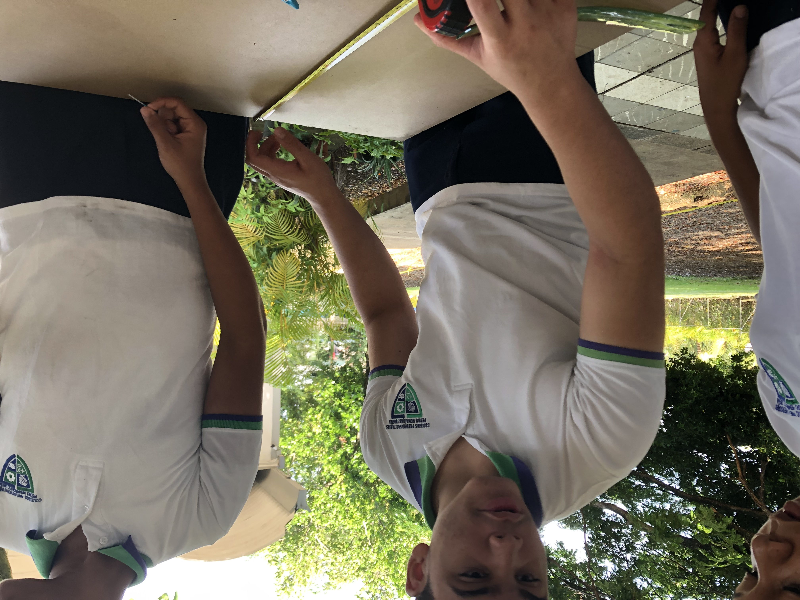

Por: Josué Acosta
El clásico de clásicos, el primero de todos, un juego que, marcó no sólo la infancia de muchos, sino que también la historia de los videojuegos en general, y ahora de forma rehecha.
Por: Neil Espinal
En este juego publicado en Atari podrás jugar uno de los deportes más populares, el Tennis, y de igual que Pong, el juego está en una forma rehecha.
Por: Josué Acosta
En este juego tradicional de guyana tendrás que subir un palo lleno de manteca esquivando algunos obstáculos, y al llegar a éste obtendrás el premio final.
Por: Josué Acosta
Un juego basado en el golpe de estado ocurrido en Guyana en el año 1979, donde dispondrás de vehículos de combate para evitar el empoderamiento del país.
Aquí podemos ver los procesos del proyecto en base a la parte que se codifica/programa gracias a nuestro dedicado grupo de trabajo.
 "Sebastián Ramos haciendo la página Web"  "Ámbar programando un videojuego"  "Josué testeando (probando) el videojuego PONG creado en SCRATCH"  "Neil programando un videojuego"En esta parte está el proceso físico de nuestro proyecto, y felicitamos a nuestros participantes por dedicarse a hacer una máquina con materiales ardúos de trabajar.
 "Tomando las medidas necesarias del Arcade"  "Coordinándose los trabajos entre ellos"